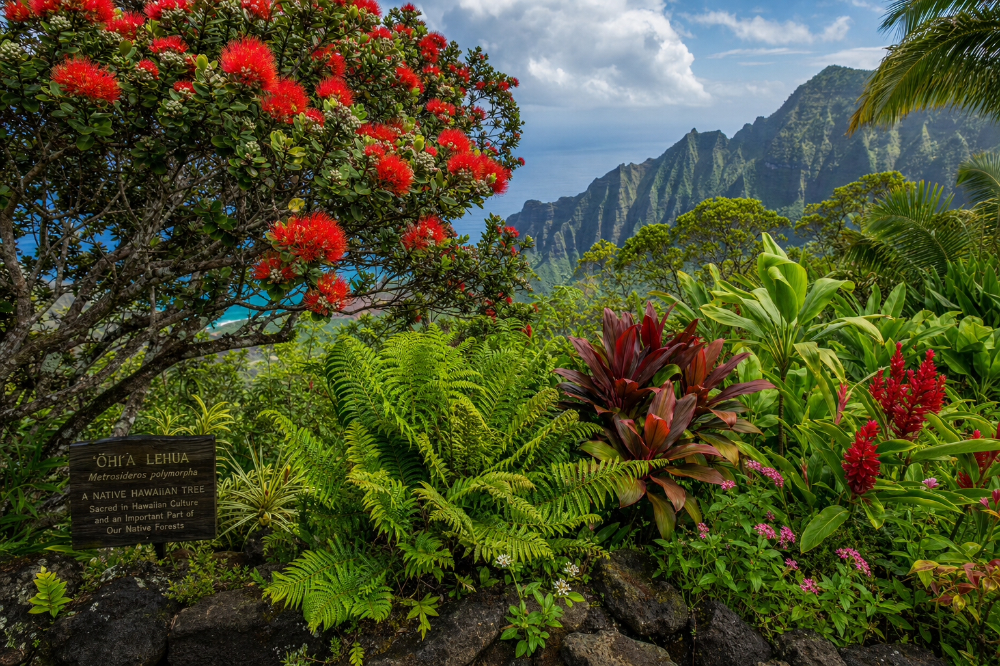

Why Native Plants Matter
Hawaii has the highest rate of endemic species of any place on Earth — about 90% of Hawaii's native plants are found nowhere else. Yet 80% of Hawaii's native plant species are endangered or threatened, largely due to habitat destruction and competition from introduced plants. Every garden that includes native Hawaiian plants is a small act of ecological restoration.
Beyond ecology, native plants make practical sense for Kauai gardeners. They're adapted to the island's rainfall patterns, soil chemistry, and pest pressures — meaning they require less irrigation, less fertilizer, and less maintenance once established than imported ornamentals.
Top Native Plants for Kauai Home Gardens
ʻŌhiʻa Lehua (Metrosideros polymorpha)
The iconic ʻōhiʻa tree is one of Hawaii's most important native plants — it forms the foundation of many native forest ecosystems and is one of the first plants to colonize new lava flows. In garden settings, dwarf varieties stay under 6 feet while full trees can reach 80 feet. The brilliant red (and occasionally yellow or orange) flowers are loved by native Hawaiian honeycreepers. Grows best above 500 feet elevation on Kauai.
Palapalai Fern (Microlepia strigosa)
The most beloved fern in Hawaiian culture, used in hula and lei. Palapalai grows naturally in shaded, moist environments — perfect for the north-facing or shaded areas of your garden where other plants struggle. It spreads gradually and creates a beautiful tropical understory.
Naupaka Kahakai (Scaevola taccada)
The beach naupaka is one of Hawaii's most distinctive native plants, recognized by its half-flower appearance. It's an excellent choice for coastal gardens, tolerating salt spray, sandy soil, and drought conditions. Grows to 6–8 feet and provides excellent habitat for shore birds.
Maile (Alyxia stellata)
Deeply significant in Hawaiian culture, maile is a climbing vine with fragrant leaves traditionally used in lei. It grows well as a ground cover or climbing plant in partial shade. Slow-growing but worth the patience — once established it's virtually indestructible.
Pua Kala (Argemone glauca)
Hawaii's native prickly poppy produces beautiful white flowers with yellow centers. It thrives in dry, rocky areas and is one of the most drought-tolerant native plants available. Great for the dry south-facing sections of your property.
Where to Source Native Plants
Several nurseries on Kauai and the Big Island specialize in native Hawaiian plants. At Hoku Gardens, we source our native plants from vetted local nurseries and ensure all plants are correctly propagated from local genetic material — not imported from other island populations that may have different adaptations.